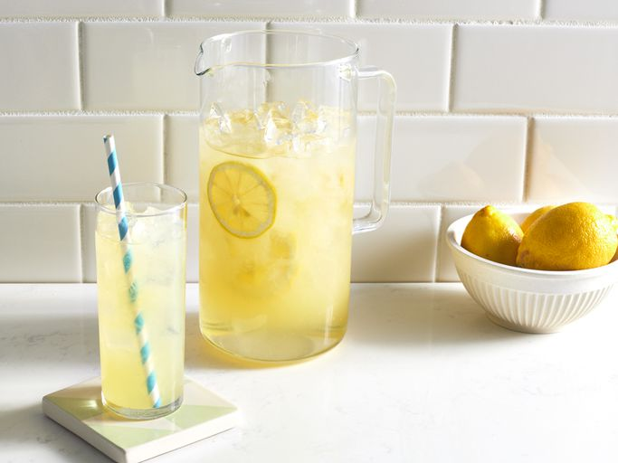

Lemonade
The best homemade Lemonade ever!

This lemonade recipe makes a very refreshing drink!
When life gives you lemons, make the Best Lemonade Ever! This aptly named recipe is as good as it gets: Sweet, tart, easy to throw together, and oh-so refreshing. Sweeten your day with our top-rated lemonade recipe (and get our best lemonade serving and storage tips).
Ingredients:
That's it!
Directions:
- Juice your lemons. Start by firmly rolling the lemons around on the counter. This will help release the juices and make your job a lot easier. Cut the lemon in half lengthwise, then squeeze out the juice by hand or with a juicer. Make sure to juice the lemons over a large measuring cup so you can see exactly how much liquid you have.
- It's shockingly simple to make simple syrup on the stove. Just combine sugar and water in a small saucepan, bring the mixture to a boil, and stir it until the sugar is dissolved.
- Pour cold water into a pitcher. Stir in lemon juice and pulp, then add simple syrup to taste.
- Serve over ice. If you're feeling fancy, garnish each glass with a fresh lemon slice or a candied lemon peel.